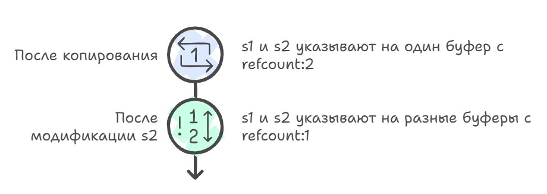
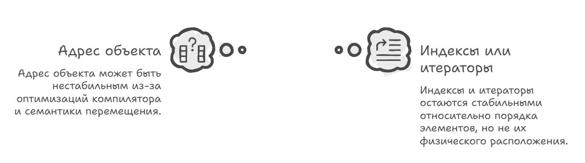
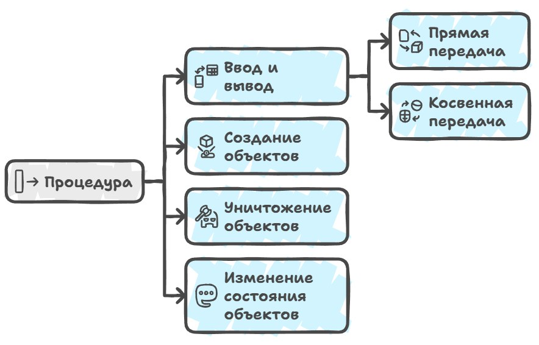
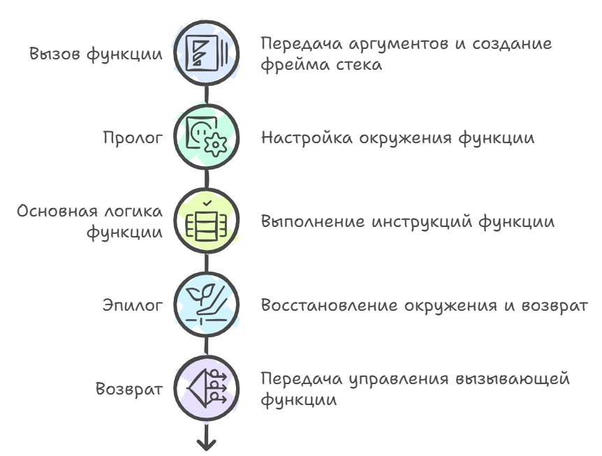
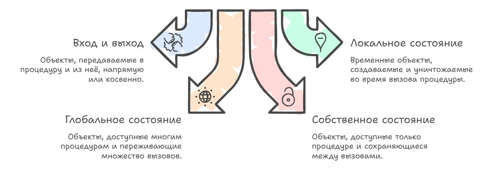
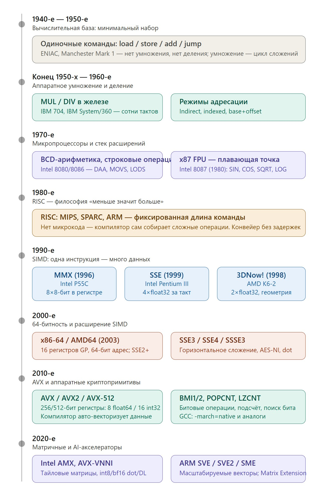
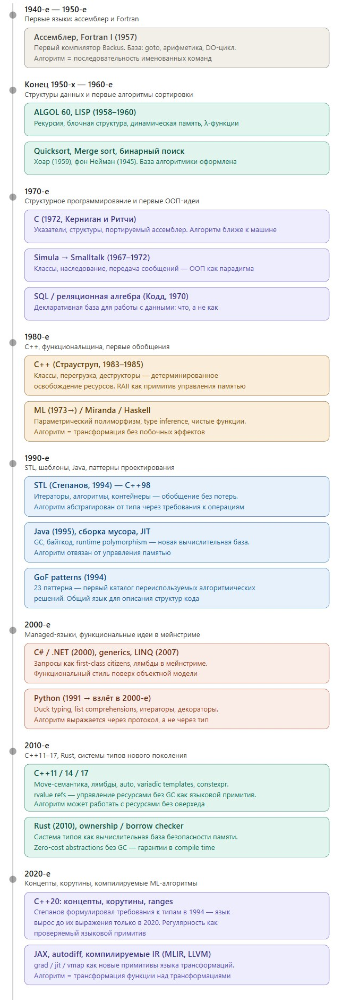
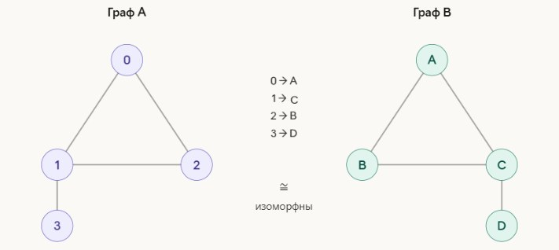

Это не отдельная статья, а продолжение части 1 про теорию объектов в C++, почему объекты в плюсах такие какие есть. Все завершённые главы я также выкладываю на GitHub в английском и русском варианте. Продолжаем разбираться в теории С++…
Отдельного разговора заслуживает идентичность объектов, потому что в реальном мире конкретные сущности обладают идентичностью и Сократ останется Сократом независимо от того, перекрасил ли он волосы, сменил адрес или умер, а государство остаётся тем же государством, даже если меняет флаг, конституцию или размер населения.
Чтобы отразить это в программе, объекты, представляющие конкретные сущности, нуждаются в своём определении идентичности, которая отделена от текущего состояния. Удобный способ ввести такую идентичность будет сделать некий токен идентичности, уникальное значение, которое выражает «кто это», а не «в каком он сейчас состоянии». Таким токеном может быть, например, адрес объекта в памяти, индекс в массиве, или табельный номер сотрудника в кадровой системе и проверяя равенство токенов идентичности, мы фактически проверяем тождественность объектов: один и тот же объект или разные.
На протяжении жизни программы конкретный объект может менять свои токены идентичности, потому что его могут переместить в другой участок памяти или переложить из одного контейнера в другой, или назначить ему новый идентификатор, но логическая идентичность сохраняется, если мы поддерживаем сопоставление между «старым» и «новым» токеном.
Наконец, стоит провести чёткую линию между равенством объектов и их тождественностью. Два объекта одного и того же типа равны, если их состояния равны как значения: два std::string, оба содержащие «hello», равны, даже если лежат в разных местах памяти и имеют разные внутренние буферы; два вектора std::vector<int>, содержащие одинаковые последовательности, равны как последовательности значений.
В этом случае естественно говорить, что один объект является копией другого, а любые изменения, сделанные в одном, не затрагивают копию. Проверка равенства здесь опирается на модель значений, а не на адреса, а тождественность же отвечает на другой вопрос — «это тот же самый объект или просто другой объект с таким же состоянием?».
В ранних компиляторах и рантаймах C++ вопрос о равенстве и тождественности был тесно связан с тем, как реализованы копирование и перемещение и старые реализации могли неожиданно «делить» внутренние буферы между объектами, например для std::string через copy-on-write, и приходилось осторожно относиться к тому, что именно означает «копия», но по мере развития стандарта и реализации компиляторы и библиотеки стали гораздо более строгими в трактовке равенства по состоянию и тождественности по идентичности, что упростило рассуждения о корректности кода.
// GCC до C++11 с COW строками:
std::string s1 = "hello";
std::string s2 = s1; // Буфер НЕ копируется
// s1 и s2 указывают на ОДИН буфер в памяти
// Внутри счётчик ссылок = 2
// При модификации:
s2[0] = 'H'; // Только СЕЙЧАС буфер копируется (Copy-On-Write)
А с появлением новых методов оптимизации кода, оказалось, что такого токена вообще может не быть и адрес перестаёт быть надёжным признаком идентичности, потому что объект может вообще не иметь стабильного адреса на протяжении всего времени жизни, существуя то в памяти, то в регистрах, то в виде константы, вшитой в код. Более того, с появлением семантики перемещения в C++11 стало очевидно, что адрес объекта может меняться при его переносе из одного контейнера в другой.
// C++ код:
struct Point { int x, y; };
void foo() {
Point p;
p.x = 10;
p.y = 20;
use(p.x + p.y);
}
// Без оптимизаций (объект в памяти):
; %p = alloca Point
; store 10, p.x
; store 20, p.y
; load p.x, load p.y
// После оптимизаций (объект стал значениями в регистрах):
; %x = 10
; %y = 20
; %sum = add %x, %y
; (объекта Point в памяти вообще нет)
// тут будут проблемы
Point p; ? нет токена идентичностиСамый простой пример потери токена-адреса связан с массивами, можно хранить указатель на элемент std::vector и считать его токеном идентичности, но любая операция, вызывающая реаллокацию, инвалидирует все указатели, и приходится использовать индексы или итераторы, которые остаются стабильными относительно порядка элементов, но не их физического расположения, и это уже совсем другая модель идентичности, где «кто это» определяется не «где это лежит», а «какое это по счёту» или «как до этого дойти».

В современных игровых системах токен идентичности всё чаще становится явно введённым значением, независимым от адреса: в популярных ECS архитектурах, каждый объект получает уникальный числовой идентификатор при создании, и этот ID остаётся неизменным независимо от того, как компоненты объекта перемещаются в памяти, в базах данных первичные ключи играют ту же роль, позволяя ссылаться на запись независимо от её физического расположения на диске, а в распределённых системах используются UUID или GUID, которые гарантируют уникальность без центральной координации, и все эти подходы объединяет одна идея: токен идентичности должен быть стабильным значением, которое переживает любые перемещения, копирования и трансформации объекта, и которое можно безопасно хранить, передавать и сравнивать, не боясь, что оптимизатор компилятора, сборщик мусора или реорганизация данных внезапно сделают его недействительным.
Но для нас полезно держать в голове упрощённую картину: память (адреса и слова), значение (интерпретация последовательности битов), объект (место в памяти), где это значение живёт и тип данных как представление о том, как мы эти биты храним, читаем, модифицируем и сравниваем.
Процедуры
Когда мы переходим от значений и объектов к поведению программы и что вообще делает программу программой, то на сцене появляется ещё одна фундаментальная категория: процедуры. В привычном C++ это просто функция, но в более общем смысле можно сказать, что процедура будет некоторой последовательностью правил, которая меняет состояние объектов, с которыми она работает, а иногда ещё и создаёт новые объекты или уничтожает старые.

Исторически компиляторы начинали с очень примитивного понимания процедур: в раннем Fortran и первых версиях C процедура была просто именованным отрывком кода с фиксированным набором аргументов, и вся «магия» состояла в том, чтобы правильно сгенерировать вход и выход из неё (пролог и эпилог), сохранить регистры, организовать стек.
int sum(int a, int b) {
return a + b;
}
int main() {
return sum(2, 3);
}
// упрощенно, все идет через стек
push 3 ; аргумент b
push 2 ; аргумент a
call sum
sum:
push bp
mov bp, sp
mov ax, [bp+4] ; a
add ax, [bp+6] ; b
pop bp
ret
// особенности
- все аргументы лежат в памяти
- доступ через bp/fp
- каждый вызов будет явный stack frame
- просто, но медленно в целом и генерирует много обращений к памятиСам стек вызовов это просто область памяти, которая растёт и сжимается по мере того, как программа входит в функции и выходит из них, и каждый вызов функции создаёт на стеке новый фрейм, stack frame или activation record, который содержит всю информацию, необходимую для выполнения этой конкретной инстанции функции: локальные переменные, аргументы, адрес возврата, сохранённые значения регистров, и возможно дополнительные служебные данные вроде указателя на фрейм вызывающей функции или место для выравнивания.
Когда компилятор генерирует код для вызова функции, первое, что он должен решить как передать аргументы, и здесь вступают в силу соглашения о вызовах (calling conventions), которые диктуют, будут ли первые несколько аргументов передаваться через регистры процессора для скорости, а остальные укладываться на стек, или все аргументы пойдут на стек, что медленнее, но проще для реализации и отладки, и исторически разные архитектуры и компиляторы выбирали разные стратегии.
// упрощенно, fastcall
mov ecx, 2 ; a
mov edx, 3 ; b
call sumreg
sumreg:
mov eax, ecx
add eax, edx
retПролог выполняется сразу после входа в функцию и до начала её основной логики, и его задача состоит в том, чтобы настроить окружение для работы: сохранить значения тех регистров, которые функция собирается использовать, но которые по соглашению должны быть восстановлены перед возвратом (callee-saved registers), выделить место под локальные переменные, установить специальный регистр, который будет указывать на фиксированную точку внутри фрейма и позволит обращаться к локальным переменным и аргументам по постоянным смещениям независимо от того, как меняется указатель стека в процессе выполнения функции. В классическом x86 пролог выглядел как сохранение старого значения базового указателя и установку нового указателя на текущую вершину стека, и эта последовательность стала настолько стандартной, что процессоры даже получили специальную инструкцию, которая делала всё это одним махом, хотя на практике компиляторы редко её используют.
Выделение памяти под локальные переменные на стеке в прологе — это не просто вычитание числа из указателя стека, это ещё и решение задачи оптимального размещения: компилятор должен определить, в каком порядке разместить переменные, как их выровнять и можно ли переиспользовать одну и ту же область памяти для разных переменных, которые не живут одновременно что позволяет экономить место в стековом фрейме.

Ранние компиляторы решали эту задачу очень прямолинейно: каждая переменная получала своё фиксированное место, размер фрейма был суммой размеров всех локальных переменных плюс выравнивание, и никакой оптимизации, но по мере роста сложности программ появились алгоритмы вроде graph coloring, которые начали применять и к размещению переменных на стеке, позволяя накладывать переменные с непересекающимися временами жизни друг на друга.
Эпилог функции выполняет обратные действия, восстанавливая указатель стека в то состояние, в котором он был до вызова функции, и загружая обратно в регистры сохранённые значения. Потом выполняет инструкцию возврата, которая снимает со стека адрес возврата и передаёт управление обратно вызывающей функции, и здесь тоже возникают тонкости, потому что разные calling conventions по-разному распределяют ответственность за очистку стека от аргументов. В cdecl это делает вызывающая функция после возврата, что позволяет поддерживать функции с переменным числом аргументов, но требует генерации дополнительного кода, тогда как в stdcall очисткой занимается вызываемая функция перед возвратом, что экономит размер кода, но делает невозможными определённый тип вызова функций, и именно эта разница привела к проблеме совместимости между разными версиями библиотек, когда скомпилированные с одним соглашением, вызывались из кода, ожидавшего другое, и стек портился, приводя к крашам спустя много времени после некорректного вызова.
Современные компиляторы ушли далеко вперёд от простой модели «выделил место, вызвал функцию, освободил место» в сторону ещё одной системы со своей теорией и оптимизациями.
int sum(int a, int b) {
return a + b;
}
int main() {
return sum(2, 3);
}
// уропщенно, дебаг версия
mov edi, 2
mov esi, 3
call sumreg
// sumreg, debug
; a → edi, b → esi
add edi, esi
mov eax, edi
ret
// sumopt, release
mov eax, 5
ret
// особенности
- регистры основной путь передачи данных
- стек, как fallback и для больших объектов
- компилятор может убрать вызов совсем
- или убрать frame и сделать выполнение в месте вызова
- или сделать вызов + держать всё в регистрах
// итого
- процедура ≠ обязательно stack frame
- аргумент ≠ обязательно доступ в память
- вызов ≠ обязательно callПередача аргументов
По мере развития языков и компиляторов стало ясно, что ключевым вопросом здесь является не столько синтаксис, сколько то, как именно процедура взаимодействует с объектами: какие она читает, какие модифицирует, какие живут только во время вызова, а какие переживают множество вызовов и даже весь срок жизни программы. Если попытаться разложить это взаимодействие на понятные категории, можно выделить четыре группы объектов, с которыми имеет дело практически любая процедура. Во-первых, это «вход и выход/in-out», то есть объекты, которые передаются в процедуру и из неё либо напрямую, либо косвенно.

Прямо будет когда вы пишете int f(int x) и компилятор передаёт значение x по регистрам или по стеку, а потом возвращает результат, скажем, тоже в регистре; косвенно — когда вы передаёте указатель или ссылку, вроде void increment(int* p), и процедура работает с объектом не как с копией значения, а как с оригиналом в памяти.
Во-вторых, это локальное состояние: временные объекты, которые создаются в начале вызова процедуры, живут на стеке или в регистрах, подстраиваются под нужды алгоритма и уничтожаются, когда процедура завершает работу. Если вы в функции void foo() объявляете int tmp = 0; std::vector<int> v(10);, то и tmp, и v — часть локального состояния этой процедуры: они нужны ей для работы, но снаружи никто о них не знает и знать не должен.
И глобальное состояние: объекты, доступ к которым имеет не только эта процедура, но и другие, причём на протяжении многих вызовов — это глобальные переменные, статические поля, или объекты в динамической памяти, на которые есть ссылки из разных частей программы.
И наконец, есть ещё собственное состояние процедуры, то есть такие объекты, которые доступны только ей самой (и, возможно, тесно связанным функциям), но при этом сохраняются между вызовами. Простейший пример — static переменная внутри функции: вы можете написать
void counter() {
static int n = 0;
++n;
std::cout << n;
}и тогда n будет жить столько, сколько живёт программа, но использовать её сможет только counter, для всех остальных она как бы не существует, и это демонстрирует типичный паттерн «скрытого» состояния процедуры, который появился ещё в старом C задолго до классов.
In, Out, InOut
Для того чтобы точнее говорить о поведении процедуры, нужно ввести ещё одно разделение: какие объекты считаются её входами, какие выходами, а какие и теми, и другими. Если процедура только читает значение объекта, никогда его не изменяя, то этот объект для неё — чистый вход; если же процедура создаёт объект, записывает в него данные или уничтожает его, не глядя на его прежнее содержимое, то такой объект выступает как выход и его начальное состояние неважно, важно только новое.
/* ═══════════════════════════════════════════════════
ЧИСТЫЙ ВХОД / функция только читает объект
═══════════════════════════════════════════════════ */
// len не меняет массив, arr является чистым входом.
// Компилятор вправе вынести вызов за пределы цикла (CSE/hoisting),
// закэшировать результат, переупорядочить относительно других
// вызовов, которые тоже только читают.
size_t len(const int *arr, size_t n) {
size_t count = 0;
for (size_t i = 0; i < n; i++)
if (arr[i] != 0) count++;
return count;
}
void pure_in(void) {
int data[] = {1, 0, 3, 0, 5};
// Компилятор видит, что data между вызовами не меняется →
// может вычислить len() один раз и переиспользовать.
printf("len=%zu, len=%zu\n", len(data, 5), len(data, 5));
}/* ═══════════════════════════════════════════════════
ЧИСТЫЙ ВЫХОД / функция создаёт или полностью заполняет объект,
прежнее содержимое не читается
═══════════════════════════════════════════════════ */
// Начальное состояние dst не важно совсем — это чистый выход.
// Компилятор может устранить предшествующую запись в dst (DCE),
// если сразу после неё стоит fill(), то старые данные всё равно затрутся.
void fill(int *dst, size_t n, int value) {
for (size_t i = 0; i < n; i++)
dst[i] = value; // только запись, чтения нет
}
void pure_out(void) {
int buf[8];
buf[0] = 42; // ← компилятор вправе убрать эту запись (DCE):
// fill() ниже перезапишет весь массив
fill(buf, 8, 0);
printf("buf[0]=%d\n", buf[0]);
}Самый интересный случай будет когда объект и читается, и модифицируется: например, переданный по ссылке счётчик, который функция увеличивает, или элемент массива, который сначала проверяется на какое-то условие, а потом обновляется. Такие объекты выступают как вход/выход процедуры, и именно они чаще всего становятся источником сложных эффектов и ошибок, если программист не до конца отдаёт себе отчёт, кто именно в программе имеет право менять их состояние.
// --- Счётчик, передаваемый по ссылке ---
// counter сначала читается (для увеличения), потом записывается.
// Два вызова increment() НЕ эквивалентны одному increment_by_2(),
// если между ними есть другой поток или сигнал, читающий counter.
void increment(int *counter) {
(*counter)++; // read + write: типичный вход/выход
}
// --- Элемент массива: проверка + обновление ---
// Функция сначала смотрит на старое значение (вход),
// затем записывает новое (выход). Порядок операций критичен.
void cap_and_mark(int *value, int limit) {
if (*value > limit) // чтение ← вход
*value = limit; // запись ← выход
}
// --- Классический accumulate: вход/выход в чистом виде ---
// sum читается на каждой итерации и тут же пишется.
// Компилятор НЕ может переставить итерации местами или
// распараллелить без явного указания (OpenMP reduction и т.п.),
// потому что каждая итерация зависит от результата предыдущей.
void accumulate(const int *arr, size_t n, int *sum) {
for (size_t i = 0; i < n; i++)
*sum += arr[i]; // *sum: read → modify → write
}В ранних компиляторах анализ этих категорий был практически полностью на совести программиста и компилятор просто принимал код как есть, но современные оптимизаторы компиляторов активно анализируют, какие переменные только читаются, какие пишутся и где возможны побочные эффекты, и уже на основе этого решают, какие вызовы можно изменить (reordering, cse, dce), какие преобразования допустимы, а какие нарушили бы ожидаемую семантику.
// restrict сообщает компилятору: указатели dst и src не перекрываются.
// Без него компилятор обязан предполагать, что dst и src могут
// указывать на один регион памяти (aliasing) → запрещено векторизовать.
// С restrict — можно развернуть в SIMD-инструкции.
void add_arrays(int * restrict dst,
const int * restrict src,
size_t n)
{
for (size_t i = 0; i < n; i++)
dst[i] += src[i]; // dst: вход/выход; src: чистый вход
}
// __attribute__((pure)) — явная подсказка GCC:
// функция не имеет побочных эффектов и зависит только от аргументов.
// Компилятор может устранить повторные вызовы (CSE) и
// переставить вызов относительно кода, не трогающего память.
__attribute__((pure))
int dot_product(const int *a, const int *b, size_t n) {
int result = 0;
for (size_t i = 0; i < n; i++)
result += a[i] * b[i];
return result;
}Вычислительная база
Переходя от процедур к идее вычислительной базы, надо понимать какие операции ваш тип вообще поддерживает. Для любого типа значений можно задать некоторый минимальный набор процедур, из которых, в принципе, можно построить все остальные операции над ним; такой набор называют вычислительной базой типа.
Например, для беззнаковых k-битных целых можно взять операции «получить ноль», «проверить равенство» и «перейти к следующему значению», и теоретически из них можно реализовать и сложение, и умножение, и сравнение, просто как очень длинные последовательности вызовов «следующего» и проверок.
Но здесь вступает в игру понятие эффективности: база считается эффективной, если любая процедура, построенная на её основе, может быть реализована не хуже, чем на любой другой разумной базе. В примере (ниже) с операцией «следующего» всё плохо: сложение двух k-битных чисел через многократное инкрементирование одного из них потребует порядка 2^k шагов в худшем случае, то есть будет заведомо медленным, тогда как реализация сложения на уровне машинных инструкций выполняется за фиксированное число тактов, не зависящее от значений аргументов.
Исторически, если посмотреть на эволюцию процессорных архитектур и компиляторов, видно, как набор базовых операций постепенно расширялся именно ради эффективности: от первых машин с очень ограниченным набором инструкций, где сложные операции приходилось эмулировать длинными последовательностями элементарных шагов, до современных архитектур с богатой системой арифметических и логических команд, для которых компиляторы умеют генерировать специализированный код и векторизованные версии алгоритмов.

Небольшое историческое отступление, как код проникал в кремний
1940-е + 1950-е: минимальная вычислительная база
ENIAC (1945) не имел хранимой программы вообще; «инструкции» задавались коммутационными панелями. Единственные операции: сложение и вычитание над десятичными цифрами, накопленными в кольцевых счётчиках.
Manchester Mark 1 (1948) и EDSAC (1949) были первыми машинами с хранимой программой. Набор команд: загрузка/сохранение, сложение, сдвиг, условный переход. Умножение отсутствовало как аппаратная операция и программист писал подпрограмму из циклов сложения.
IBM 701 (1952) первый коммерческий научный компьютер IBM. Умножение появилось, но занимало ~40 машинных тактов, а деление порядка 80. На фоне сложения (1 такт) это была уже заметная «оптимизация базы».
Деление реализовывалось методом последовательных вычитаний: процессор в цикле вычитал делитель из частичного остатка и считал итерации.
Конец 1950-х + 1960-е: аппаратное умножение, деление, режимы адресации
IBM 704 (1954) первый массовый компьютер с аппаратной плавающей точкой и аппаратным умножением в одну инструкцию. Индексные регистры позволили адресовать массивы циклом, а не вручную подставлять адрес.
IBM System/360 (1964) унификация всех систем и одна ISA для машин от настольных до мейнфреймов. Более 100 опкодов; появились режимы
base + displacement,register indirectPDP-8 (1965) 8 инструкций в ISA, но мощные режимы адресации компенсировали скудость и показала, что «маленькая база + умные режимы» даёт гибкость не хуже «большой базы».
CDC 6600 (1964) первый суперкомпьютер с конвейером и несколькими функциональными устройствами параллельно. Компилятор Fortran для него уже занимался планированием порядка инструкций, чтобы конвейер не простаивал.
1970-е: микропроцессоры, x86, сопроцессоры
Intel 4004 (1971) 4-битный, 46 инструкций, умножения нет. Минимальная база в кремниевом чипе.
Intel 8080 (1974) 8-бит, появились инструкции для BCD-арифметики (
DAA,DAS) вроде сложение десятичных цифр в двоичном регистре. Пример расширения базы под конкретную прикладную область (бухгалтерия, кассовые аппараты).Intel 8086 (1978) 16-бит, 16-битное умножение
MUL/IMULи делениеDIV. Добавили операцииMOVS,LODS,STOSфактически аппаратный цикл копирования памяти, то, что раньше требовало бы явного цикла на ассемблере.Zilog Z80 (1976) добавил
LDIR(block move) иDJNZ(decrement and jump if non-zero) аппаратную реализацию паттерна «счётный цикл»; ещё один пример того, как частый программный паттерн «опускается» в железо.Intel 8087 (1980, формально уже переход в 1980-е) добавили сопроцессор с 80-битными регистрами стека и инструкциями
FSIN,FCOS,FSQRT,FYL2X. Тригонометрия, которая раньше занимала сотни строк библиотечного кода, стала одной командой в кремнии. Компилятор Fortran тут же научился эмитироватьFSINвместо вызоваsin()из libc.
1980-е: RISC и философия «компилятор умнее микрокода»
Беркли RISC (1980) и Стэнфорд MIPS (1981) академические проекты, показавшие, что простые инструкции фиксированной длины позволяют сделать длинный конвейер без простоев, а сложные операции выгоднее реализовывать в компиляторе, чем в микрокоде.
SPARC (1987, Sun) первая крупная коммерческая RISC-архитектура. Компилятор Sun cc выполнял распределение регистров между вызовами функций без записи в память. Процессор специально проектировался под сановский компилятор.
MIPS R2000 (1985) добавили отдельный блок
DIV, который работал асинхронно от конвейера.ARM (1985, Acorn) 3-адресная RISC-ISA, где компилятор мог превратить короткие if-ветки в линейный код без прыжков, дедушка спекулятивного выполнения и важнейшая оптимизация для маленьких предсказателей переходов.
Intel 80386 (1985) 32-бит,
PUSHA/POPA,ENTER/LEAVEдля прологов функций в одной инструкции.
1990-е: SIMD и расширение базы «в ширину»
Intel MMX (1996, Pentium MMX) 57 новых инструкций, теперь стало восемь 64-битных регистров
mm0–mm7и однаPADDBскладывала сразу 8 пар байт. Видеокодеки, звук, 2D-графика сразу подхватили новые возможности и это ускорило код в 4–8 раз при правильной готовке.AMD 3DNow! (1998, K6-2) 21 инструкция для 2×float32. Было направлено на геометрию 3D-игр:
PFMUL,PFADD,PFRCPIT1(аппроксимация обратного корня). Адаптация нишевого расширения базы проца под конкретный рынок.Intel SSE (1999, Pentium III) 70 инструкций, восемь новых 128-битных регистров
xmm0–xmm7. Компилятор GCC получил флаг-msseи начал авто-векторизовывать простые циклы.SSE2 (2001, Pentium 4) добавили double-precision float и целочисленный SIMD в xmm-регистры. Теперь компиляторы постепенно переходят на SSE2 для скалярной плавающей точки.
x86-64 / AMD64 (2003, AMD Opteron) технически 2000-е, но корнями в 1990-е (проект начат ~1999). Регистры расширены до 64 бит, добавлены
r8–r15. SSE2 стал обязательной частью вычислительной базы.
2000-е: 64 бит повсюду, криптография и расширение SIMD
SSE3 (2004, Prescott) добавили горизонтальное сложение
HADDPS(складывает соседние лейны внутри регистра), нужны были для комплексной арифметики и сверточных функций, под давлением рынка код опять переехал в кремний.SSSE3 (2007, Core 2)
PSHUFBи перестановка байт по маске. Один из самых мощных примитивов: позволяет реализовать lookup-таблицы и битовые манипуляции без ветвлений; компилятор Intel использует для LUT-оптимизаций.SSE4.1 / 4.2 (2007–2008)
PMULDQ(32f×32f→64f умножение),PCMPESTRM(поиск подстроки в строке за одну инструкцию),CRC32, строковые алгоритмы и хэш-функции получили аппаратную поддержку в железеVT-x / AMD-V (2005–2006) виртуализация: новые инструкции
VMXON,VMLAUNCH,VMEXIT. Вычислительная база расширяется не только для вычислений, но и для привилегированного управления.
2010-е: AVX, битовая алгебра, транзакционная память
AVX (2011, Sandy Bridge) 256-битные
ymm-регистры, 8 float32 или 4 float64 за такт. Убрали разрушающие операции, компиляторы научились распределять субтипы по всем регистрам.AVX2 (2013, Haswell) целочисленный 256-бит SIMD, GCC с
-march=haswellначал авто-векторизовать гораздо больше паттернов.BMI1/BMI2 (2013) POPCNT теперь умеет в подсчёт числа единичных бит. Алгоритм Хэмминга из ~15 инструкций, превращается в 1 операцию.
AVX-512 (2017, Skylake-X / Knight's Landing) 512-битные
zmm-регистры (16 float32)TSX / RTM (2013) транзакционная память:
XBEGIN/XEND/XABORT. Попытка опустить lock-free паттерны в вычислительную базу, но отключена из-за уязвимостей.
2020-е: матрицы, масштабируемые векторы, AI-примитивы
AVX-VNNI (2021, Alder Lake) —
VPDPBUSDи вариации: dot-product int8/int16 с аккумуляцией в int32. Один вызов заменяет внутренний цикл свёртки, направлено на инференс нейросетей прямо на CPU без GPU.Intel AMX (2023, Sapphire Rapids) тайловые регистры
tmm0–tmm7до 1 КБ каждый;TDPBSSDвычисляет целый блок матричного умножения за одну инструкцию, что позволило расширить вычислительную базу с «вектора» до «матрицы».ARM SVE (2016, реализовано в Fujitsu A64FX 2019, Apple M4 2024) длина вектора не фиксирована в вычислительной базе и один бинарник может корректно работать на 128-, 256-, 512-бит и шире. Компилятор генерирует код один раз, а железо уже подстраивается под ширину данных.
Можно, конечно, сказать, что и вычитание двух произвольных чисел будет излишеством и его можно реализовать через сложение с отрицанием, а отрицание сделать через вычитание из нуля, но если вы попытаетесь писать реальный код только с операциями «+», «0» и «next», то обнаружите, что многие определения становятся громоздкими и нечитаемыми. Поэтому, когда мы проектируем «выразительную» базу, то добавляем в неё операции, которые логически выводимы из других, но практическая польза от их явного наличия гораздо выше, чем цена увеличения базы.
// ============================================
// МИНИМАЛЬНАЯ БАЗА (теоретически достаточная)
// ============================================
namespace MinimalBase {
using uint = unsigned int;
// Три примитива:
uint zero() { return 0; }
bool equal(uint a, uint b) { return a == b; }
uint next(uint a) { return a + 1; } // инкремент
// Всё остальное строим через эти три операции:
// Сложение через многократный инкремент - O(b) операций!
uint add(uint a, uint b) {
uint result = a;
for (uint i = zero(); !equal(i, b); i = next(i)) {
result = next(result);
}
return result;
}
// Умножение через многократное сложение - O(a*b) операций!
uint multiply(uint a, uint b) {
uint result = zero();
for (uint i = zero(); !equal(i, a); i = next(i)) {
result = add(result, b);
}
return result;
}
// Сравнение через вычитание (через многократный декремент)
// O(min(a,b))
bool less(uint a, uint b) {
while (!equal(a, zero()) && !equal(b, zero())) {
a = a - 1; // здесь нам нужен prev(), но его пока нет в базе
b = b - 1;
}
return !equal(b, zero());
}
}Так получилось и в стандарте C++, формально язык можно было бы сделать очень минималистичным наподобие родителя, но на практике большинству из нас нужны операторы вроде -, *, /, проверка <, >, стандартные функции над числами, чтобы выражать свои мысли понятно и коротко, а компилятору такое расширенное множество позволяет лучше переводить их на соответствующие машинные инструкции.
Компиляторы и библиотеки постепенно обогащали базу доступных операций: ранние версии стандартных библиотек имели меньше алгоритмов и меньше «встроенных» операций над типами, и программистам приходилось самим реализовывать то, что сегодня воспринимается как само собой разумеющееся, имея в своём запасе всё что нужно: от элементарных численных функций до сложных алгоритмов сортировки и поиска.
Современные компиляторы, уже живут в мире, где вычислительная база для фундаментальных типов достаточно богата и хорошо оптимизирована, и их основная задача теперь максимально эффективно использовать эту базу, не ломая при этом семантику языка. Когда вы пишете a + b для целых, компилятор знает, какую именно машинную инструкцию использовать, как учесть переполнение, какие флаги выставятся в процессоре, и умеет на основе этого строить оптимальные последовательности команд. Теперь если наложить развитие железа на возможности языков, то получится что-то такое:

50e: ENIAC → арифметика (сложение как базовая операция)
70e: C → память и указатели (адресная арифметика)
90e: STL → итераторы и абстрактные алгоритмы (операции вместо типов)
2000e: SIMD → векторы (одна операция над множеством данных)
2010+: AMX / JAX → матрицы и графы вычислений (блочные и декларативные операции)Если же вы создаёте свой собственный тип, скажем, BigInt или Rational, и определяете для него минимальный набор операций, который технически полон, но не очень выразителен или неэффективен, то все функции, которые вы будете писать поверх этой базы, унаследуют и её недостатки: сложение, реализованное как многократное применение инкремента, останется экспоненциальным, как ни оптимизируй. Поэтому при проектировании собственных типов на C++ вы фактически повторяете путь архитекторов машин и авторов компиляторов: выбираете, какие операции сделать базовыми, чтобы и выражать алгоритмы было удобно, и компилятор мог порождать эффективный код, и именно здесь идеи регулярных типов и аккуратного выбора вычислительной базы становятся не теорией, а практическим руководством к тому, как проектировать хорошие, предсказуемые и быстро работающие абстракции.
Регулярность
Современный С++ не появился бы без регулярности, которая на первый взгляд кажется избыточной. Но мы привыкли писать код основываясь на общих понятиях и полагаться на то, что сравнение, копирование и присваивание «как-то работают на уровне языка и компилятора». За регулярностью стоит идея, которая позволяет компилятору безопасно оптимизировать код, а нам рассуждать о нём математическими терминами, и эта идея уходит корнями в фундаментальную работу Александра Степанова начала 1990-х годов.
/* ═══════════════════════════════════════════════════════════════
IrregularMatrix НЕРЕГУЛЯРНЫЙ тип для сравнения.
Нарушает аксиому равенства: копия не равна оригиналу
(идентичность вместо равенства по значению).
═══════════════════════════════════════════════════════════════ */
class IrregularMatrix {
int* data_;
int size_;
public:
explicit IrregularMatrix(int n)
: size_(n), data_(new int[n]{}) {}
// Копирующий конструктор копирует УКАЗАТЕЛЬ, не данные.
// После этого two.data_ == one.data_ изменение one меняет two.
// Это нарушение регулярности: копия зависит от оригинала.
IrregularMatrix(const IrregularMatrix& o)
: size_(o.size_), data_(o.data_) {} // <- намеренная ошибка
// Оператор == сравнивает АДРЕСА, и одинаковые данные не считаются равными.
// Нарушена регулярность и два объекта с одними данными != друг другу.
bool operator==(const IrregularMatrix& o) const {
return data_ == o.data_; // <- намеренная ошибка
}
};Регулярный тип в современном понимании ведёт себя как примитивы вроде int или double и поддерживает корректное равенство, копирование, присваивание и конструктор по умолчанию таким образом, что равные значения остаются равными после любых операций, а копии сохраняют полную независимость от оригинала, и такая предсказуемость позволяет компилятору заменять выражения на равные им по смыслу без потери корректности программы.
Регулярные функции, в свою очередь, возвращают равные результаты при применении к равным аргументам, и это свойство, которое называется регулярностью, лежит в основе всех алгоритмов стандартной библиотеки — от сортировки и поиска до преобразований последовательностей. Весь STL был построен на предположении, что типы в контейнерах и алгоритмах ведут себя как регулярные: равенство рефлексивно, симметрично и транзитивно, копирование создаёт независимую копию, а присваивание не меняет оригинал, и именно это позволило создать библиотеку, где один и тот же алгоритм std::sort работает корректно и с int, и с std::string, и с нашими пользовательскими типами, если их спроектировали правильно.
// Шаблонная функция работает с ЛЮБЫМ регулярным типом.
// Степанов называл это «алгоритмы, абстрагированные от типа».
// std::sort, std::unique, std::min_element все такие же.
template <typename T>
T midpoint(T a, T b) {
// Работает корректно только если T регулярен:
// нам нужно, что (a + b) / 2 равно тому, что мы ожидаем.
return (a + b) / T(2);
}Когда мы работаем со встроенными типами вроде int, double или bool, мы обычно считаем операции равенства, копирования и присваивания константными по времени, потому что они сводятся к одной-двум машинным инструкциям сравнения или перемещения регистров, но как только мы переходим к составным объектам, картина усложняется. И также мы ожидаем, что проверка равенства займёт время, пропорциональное общему объёму данных, включая локальные поля, однако на практике эта линейная сложность не всегда гарантирована, и компиляторы используют хитрости, чтобы ускорить такие операции.
/* ═══════════════════════════════════════════════════════════════
Тип, где представительное == поведенческое
Тривиальные типы (POD) с фиксированным каноническим
представлением и именно для них компилятор имеет право
использовать memcpy/memcmp и генерировать SIMD-сравнение.
═══════════════════════════════════════════════════════════════ */
struct Vec3 {
float x, y, z;
// Полагаемся на побитовое равенство: для Vec3 без NaN это корректно.
// Компилятор может развернуть в три FCMPE или один VCMP (NEON/SSE).
bool operator==(const Vec3& o) const = default; // побитово
// Копирование через memcpy гарантирует регулярность,
// что для правильно спроектированного типа влечёт поведенческую идентичность.
Vec3(const Vec3& o) {
std::memcpy(this, &o, sizeof(*this));
}
Vec3(float x, float y, float z) : x(x), y(y), z(z) {}
};Если взять мультимножество (неупорядоченную коллекцию элементов с возможными повторениями, например, std::vector с дубликатами), то такой тип уже не является регулярным, но есть нюансы. Вставка нового элемента константна по времени, потому что мы добавляем элемент в конец, но чтобы проверить равенство двух таких мультимножеств, нужно либо отсортировать оба и сравнить лексикографически, что займёт O(n log n), либо для каждого элемента первого множества проверить его наличие во втором с учётом кратности и что займёт O(n²) в наивной реализации.
Стандартный std::unordered_multiset справляется с этим лучше: его operator== работает за O(n) в среднем, но деградирует до O(n²) при большом числе коллизий хеш-функции и стандарт явно это допускает. Если вы начнёте использовать такие мультимножества как элементы другого контейнера, где требуется проверка равенства для поиска или хеширования, то производительность резко упадёт по сравнению с типами, у которых operator== работает за O(1).
В экстремальных случаях равенство может оказаться NP-трудной задачей, например, если нужно проверить изоморфизм графов. Граф A и граф B выглядят по-разному — разные имена вершин, разное расположение. Но если переименовать 0→A, 1→B, 2→C, 3→D, все рёбра совпадут один к одному. Значит, графы изоморфны: это одна и та же структура, просто нарисованная иначе.
Чтобы проверить изоморфизм в общем случае, нужно найти правильное соответствие среди всех возможных перестановок вершин. Для графа из n вершин это n! вариантов и при n=20 это уже будет дофигилон операций. Быстрого (за разумное время) алгоритма, который работал бы для любых графов, до сих пор не найдено, но и не доказано, что его нет.

В таких ситуациях программист вынужден либо отказаться от полноценного равенства по смыслу, либо ограничиться представительным равенством и сравнивать биты напрямую, что быстро, но может давать ложные срабатывания для равных по смыслу, но по-разному закодированных значений.
/* ═══════════════════════════════════════════════════════════════
Типичный компромисс в реальном коде:
хранить каноническую форму, чтобы поддержать регулярность
Паттерн: нормализовать при создании → memcmp корректен.
Именно так устроены std::set, std::map,
═══════════════════════════════════════════════════════════════ */
struct CanonicalGraph {
int V;
std::set<std::pair<int,int>> edges; // хранит {min,max} — каноническая форма
void add_edge(int u, int v) {
if (u > v) std::swap(u, v); // нормализация при вставке
edges.insert({u, v});
}
// Теперь изоморфные графы с одинаковой нумерацией равны;
// одинаково закодированные тоже.
bool operator==(const CanonicalGraph&) const = default;
};Именно поэтому, когда поведенческое равенство реализовать слишком дорого или невозможно, приходится переходить к представительному: два значения равны, если их битовый образ идентичен, и для составных объектов это часто реализуется через рекурсивное сравнение полей или через memcmp на сырых байтах.
Представительное равенство всегда влечёт поведенческое, потому что если биты совпадают, то интерпретация совпадает, а обратное не всегда верно, но в практике это очень удобно для конструкторов копирования и присваивания: если вы реализуете их через побайтовое копирование, вы гарантируете, что копия будет равна оригиналу по представлению, а если тип спроектирован правильно, то и по поведению.
Аналогично, когда полное равенство по смыслу слишком дорого, можно использовать структурный порядок: лексикографический для последовательностей или по первым отличающимся полям для структур, что позволяет эффективно сортировать и искать, даже если истинный порядок по смыслу недоступен. Однако не все объекты вообще допускают копирование или равенство: если объект владеет уникальным ресурсом вроде открытого файла, сетевого соединения или GPU-буфера, то ни копирование, ни присваивание к нему смысла не имеют, и такие типы мы относим к «не-регулярным» и используем в специальных контекстах, где явно оговариваем их семантику.
/*
Структурный порядок вместо смыслового
Когда истинный порядок «по смыслу» недоступен или дорог,
лексикографический / по полям это практичная альтернатива.
std::sort, std::map, std::lower_bound работают с любым
строгим слабым порядком, не требуя «правильного» смысла.
*/
struct Version {
int major, minor, patch;
// Структурный порядок по полям: сначала major, потом minor, потом patch.
// Это одновременно и «правильный» смысловой порядок для версий —
// редкий случай, когда структурный и смысловой совпадают.
auto operator<=>(const Version&) const = default;
bool operator==(const Version&) const = default;
};
struct Document {
std::string author;
int year;
std::string title;
// Структурный порядок: author → year → title лексикографически.
// Смысловой порядок (по «важности» документа) недоступен,
// но этого достаточно для std::set и std::map.
auto operator<=>(const Document&) const = default;
bool operator==(const Document&) const = default;
};В современном C++ идеи регулярности получили наконец официальное выражение в виде концептов, которые буквально воплощают в язык то, о чём Степанов говорил ещё в 1990-е, и эти решения напрямую влияют на проектирование контейнеров, где хорошие типы всегда стремятся к регулярности. Решение задач регулярности позволили получить такие типы как std::string_view, std::span, std::optional, которые спроектированы так, чтобы равенство отражало смысл, а не детали реализации, а копирование означало логическое дублирование, а не совместное владение ресурсами.
Но если тип по природе своей не регулярный и владеет уникальным сокетом, GPU-буфером или большим файлом, то его явно относят к «объектным» типам и не пихают в value-ориентированные контейнеры, либо снабжают слабой моделью равенства с чёткой документацией о том, что именно оно проверяет.
/*
Нерегулярные типы c уникальным владением ресурсом
Если объект владеет ресурсом (файл, соединение, GPU-буфер),
копирование не имеет смысла. Move-only тип явно выражает это.
Компилятор запретит случайное копирование, создавая ошибку в compile time.
*/
// Имитация GPU-буфера — уникальный ресурс
class GpuBuffer {
void* handle_;
size_t size_;
}Для оптимизатора компилятора регулярность выражается в разрешении переупорядочивать операции, заменять a + b на b + a или даже кэшировать результат, без сайдэффектов и возможности нарушить наблюдаемое поведение.
Разработчики компиляторов шли долгим путём к пониманию этих идей и в раннем C понятия регулярности вообще не существовало, а программист просто полагался на то, что примитивные типы ведут себя предсказуемо, а составные структуры ведут так, как написано. Но сегодня мы можем писать template<std::regular T> void process(T value); и компилятор на этапе сборки условий может проверить, что тип соответствует всем требованиям, включая корректное равенство и копирование, что радикально упрощает отладку и делает код более надёжным, чем в эпоху, когда всё это висело на честном слове.
Заключение
Путь, который прошли архитекторы процессоров от ENIAC до AMX, и путь, который прошёл C++ от первых компиляторов до концептов это параллельные дороги: от минимально работающего набора операций к богатой, выразительной и эффективной базе. Когда вы проектируете свой тип (класс, архитектуру или алгоритм), вы повторяете этот путь в миниатюре: от простого определения, что вообще можно делать с значениями: создавая базовые операции и накидывая сложные поверх, и наконец решаете, насколько регулярным получается тип или сдаётесь и признаёте, что он нерегулярен по природе. Очень давно разработчики заметили, что хорошие типы ведут себя как математические объекты, работая предсказуемо, независимо от контекста, без скрытых состояний и сюрпризов. И вот тридцать лет спустя язык наконец вырос до того, чтобы выразить эту идею напрямую через концепты. Это, пожалуй, лучшая иллюстрация того, что хорошая теория в программировании рано или поздно становится практикой.
← Все статьи